原作是 Pete Cybriwsky（Instagram，另開分頁） 的 Noodle（另開分頁）：一隻會提醒你起來伸展、還會親自示範動作的小麵條。
電腦前已經有 Windows 版的拉麵 盯著，可是離開電腦、拿起手機，一滑又是半小時。拉麵手機版把麵條帶到手機上：平常不出現，連續滑太久，它就從螢幕邊走出來，帶你做一組伸展。
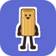
拉麵手機版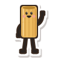
原作是 Pete Cybriwsky（Instagram，另開分頁） 的 Noodle（另開分頁）：一隻會提醒你起來伸展、還會親自示範動作的小麵條。
電腦前已經有 Windows 版的拉麵 盯著，可是離開電腦、拿起手機，一滑又是半小時。拉麵手機版把麵條帶到手機上：平常不出現，連續滑太久，它就從螢幕邊走出來，帶你做一組伸展。
設定都在 App 的「設定」分頁，數字都能改，改了就自動存檔。
螢幕亮著、解鎖了才算在用。連續滑 30 分鐘（可以改），麵條就從螢幕邊走出來；關螢幕 5 分鐘以上算休息過。沒空理它，它會自己走掉，30 分鐘內可以補做。
8 種伸展動作，麵條一邊示範、泡泡一邊說明，按「開始」幫你倒數。另有手腕、手指、看遠方 3 個新動作可以打開；動作能開關、改秒數、排順序。
預設 8:00 到 22:00 每 60 分鐘，麵條拿著杯子喝給你看，按「喝了」記一杯。照時鐘算，不管你有沒有在滑。
每天、平日、自選星期或單次；時間到了麵條說一句話，也可以帶一組動作或提醒喝水。螢幕關著時改發通知，或等你解鎖再出來。
平常隱藏，提醒時才出來；也可以貼在螢幕邊探頭，點一下出來打招呼。通話中先不出來，也能設安靜時段或暫停 1 小時。
不在背景一直檢查，只在螢幕開關、解鎖、鬧鐘響時醒來；麵條收起來就整個移除。沒有網路權限，資料只存在手機裡。
提醒用對話泡泡出現在麵條上方，蓋在你正在用的 App 上面。
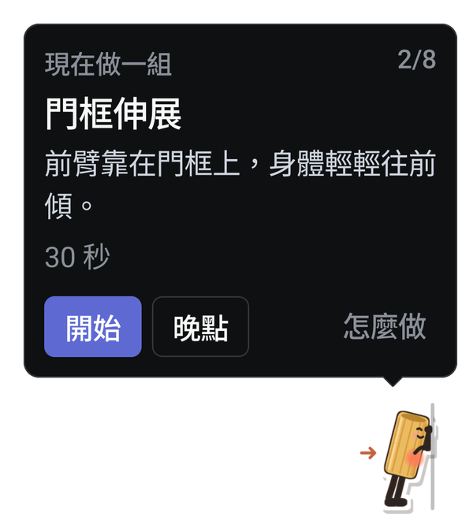
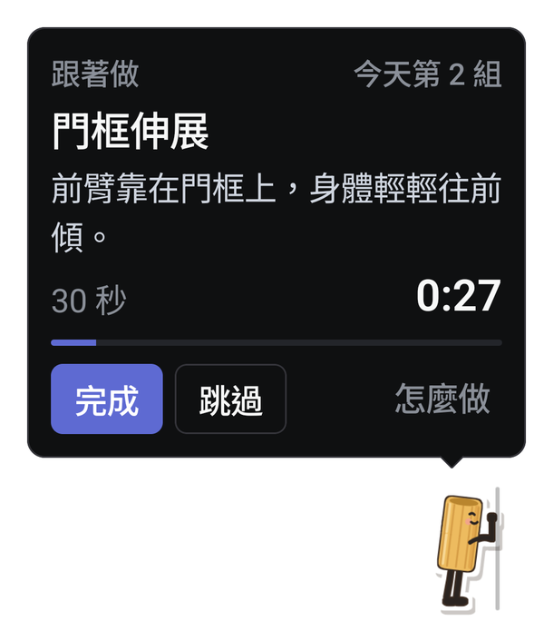
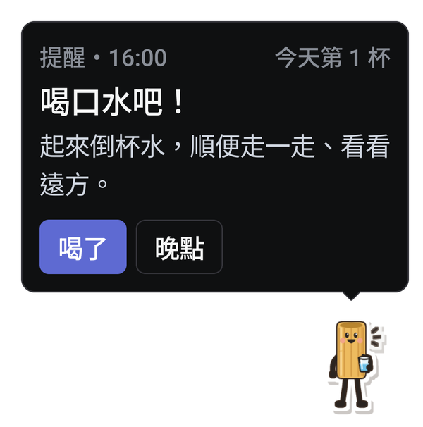
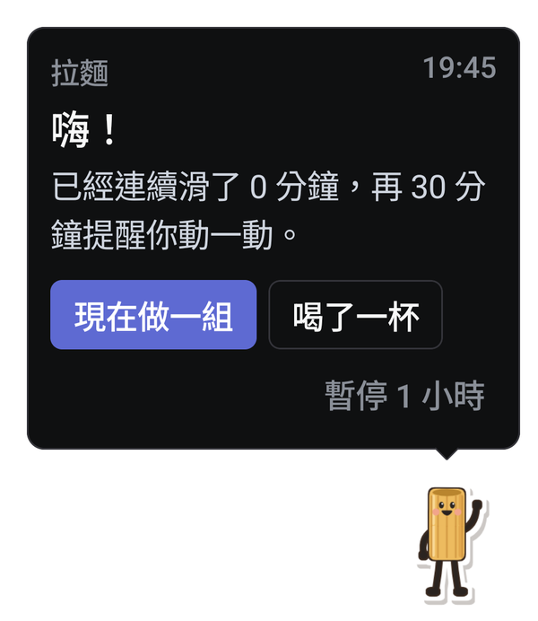
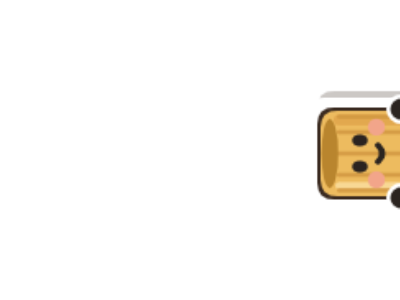
五個角色，設定裡隨時可以換；也能選大小、站右下或左下，走出來或從上面垂降。
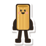
Toni水管麵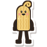
Sammy直麵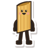
Patty筆管麵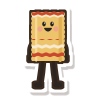
Lenny千層麵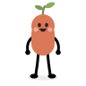
Sprout小芽
頸側伸展每邊 20 秒
胸椎伸展10 下
喝水拿杯子喝給你看角色與伸展動作示範來自 Pete Cybriwsky 的 Noodle（MIT 授權）。喜歡這些角色的話，到 Pete 的 Instagram @_re_pete（另開分頁） 看更多他的作品。
Android 13 以上的手機。不用登入，也不用另外安裝其他東西。
不會。它不在背景一直檢查，只在螢幕開關、解鎖、鬧鐘響、通話狀態改變時醒來，連續使用的時間就用這幾個時間點算出來。麵條只在提醒時畫出來，收起來就整個移除；選「側邊探頭」才會一直留一張靜止的小圖。
通知列會一直有一則拉麵的通知：Android 規定要在背景持續執行的 App 都要顯示通知。上面有今天的次數，也能直接按「喝了一杯」「現在做一組」「暫停 1 小時」。
「顯示在其他應用程式上層」讓麵條和泡泡出現在其他 App 上面，沒打開的話改用通知提醒；「通知」用在常駐通知，以及螢幕關著或通話中的提醒；鬧鐘讓喝水和自訂提醒準時；開機後執行讓它開機自動啟動，設定裡可以關。
它不需要「使用情形存取」，不會讀其他 App 的內容，也沒有網路權限。
設定、自訂提醒和今天的紀錄都存在手機裡的 App 資料。App 沒有網路權限，不會上傳，也沒有使用統計。
想休息一下，按泡泡、首頁或通知上的「暫停 1 小時」。
要完全關掉，到「設定」最上面把「開啟拉麵」關掉：不再提醒，常駐通知和麵條都收起來，開機也不會自己啟動；今天的紀錄會保留，之後打開就恢復。
回到這頁再下載一次 lamian.apk 直接安裝，會蓋過舊版，設定和紀錄都會保留。現在的版本號在「設定 → 關於」。
長按拉麵的圖示，選「解除安裝」；或到系統的「設定 → 應用程式」找到拉麵移除。設定和紀錄會一起刪掉。
可以，Windows 有 拉麵桌寵。兩個是分開的 App，設定和紀錄不互通。
不是。拉麵手機版是非官方的 Android 改寫版，與 Noodle 原作者無關，也未經原作者背書。角色、動作示範與說明來自 Noodle（MIT 授權），兩份授權全文在 App 的「設定 → 關於 → 授權資訊」。
伸展動作只是一般的活動建議，不能取代醫療建議。做的時候覺得痛或不舒服就停下來；有傷病的話，請先問醫師或物理治療師。